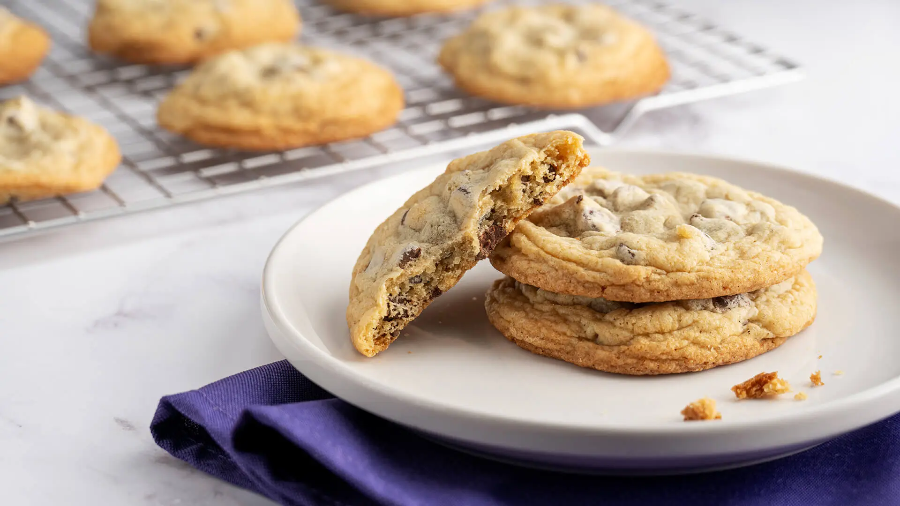

Chocolate Chip Cookies
Home
Ragu alla Bolognese
Israeli Couscous & Scallops

Chocolate chip cookies are classic, buttery cookies studded with rich, gooey chocolate chips. Crisp on the edges and soft and chewy in the center, they strike a perfect balance of sweet, salty, and indulgent. Freshly baked, their warm, comforting aroma fills the kitchen, making them a timeless treat for all ages.
Ingredients
- 1 3/4 cups all purpose flour
- 1/2 teaspoon baking soda
- 14 tablespoons unsalted butter
- 1/4 cup granulated sugar
- 1 cup packed light brown sugar
- 3/4 teaspoon salt
- 2 teaspoon vanilla extract
- 1 egg
- 1 egg yolk
- 1 cup semi-sweet chocolate chips
Directions
- Pre-heat oven to 375 degrees F
- Line a baking sheet with baking paper or silicone mat
- Whisky flour and baking soda together in a small bowl and leave to the side
- Melt and 10 tbsps of butter over medium-high heat
- Once melted, cook while swirling until the butter is a dark brown color
- Remove butter from heat and pour into a mixing bowl with the remaining 4 tbsps of butter. Beat until all the butter is melted and combined.
- Add sugar, salt, vanilla, egg, and egg yolk to the melted butter and mix until smooth with no lumps.
- Wait 3 minutes, then whisk for 30 seconds. Repeat this process 2 more times.
- Gently mix in flour mix until just combined.
- Mix in chocolate chips.
- Combine about 3 tablespoons of dough into a ball and place seperated on the baking sheet.
- Bake cookies for 5 minutes, rotate tray, and cook for an additiona 5-7 minutes or until edged are lightly browned.
- Cool cookies on wire rack until firm enough to pick up.
Notes
- Dough freezes well for a few months.